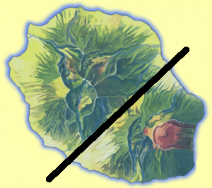
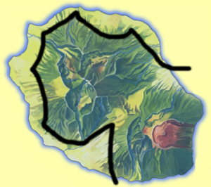
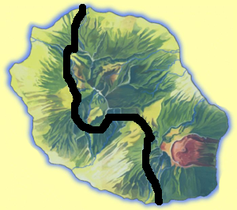
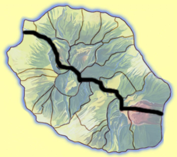
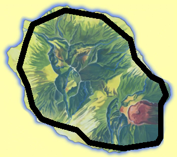
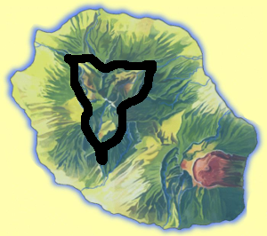
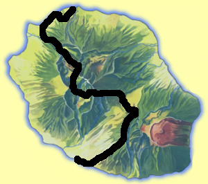

La division que j'ai retenu au lancement de ce site est la division est / ouest. Ce faisant, j'ai séparé les deux volcans de l'île. Le volcan ancien qui correspond au massif du Piton des neiges à l'ouest et le Piton de la fournaise, volcan jeune, encore en activité à l'est. La division est d'ailleurs diffuse puisque les plaine des Palmistes, au nord et plaine des Cafres, au sud en forme la frontière en un large couloir intervolcanique, peuvent en théorie être rattachés à l'un ou l'autre des massifs volcaniques.

Une division que l'on fait souvent dans les études sociologiques et même politiques est la division par la densité de population en mettant d'un coté les villes et de l'autre les campagnes. Une telle séparation à la Réunion donnerait grosso modo une carte comme celle ci-dessus. À la Réunion, l'habitat individuel prime et Les villes sont assez étalées. il n'y a donc pas de densité de population impressionante d'autant que les dénivelés et les accidents du terrain comme les ravines, ne permettent pas de construire partout. C'est surtout donc surtout dans les bas que s'étallent les les zones habitées tandis que les hauts, qui ne sont malgré tout pas déserts, laissent plus de place à la nature. Bref, il y a des villes et il y a la campagne.

Sous cette latitude, les vents dominants soufflent d'est en ouest et comme partout, les montagnes arrêtent les nuages. Les îles tropicales on donc souvent une partie au vent exposée aux vents dominantes et aux précipitations et une partie sous le vent plus sèche. La Réunion, avec son point culminant à plus de 3000m ne fait pas exception. La partie au vent est au nord est et la partie sous le vent est au sud ouest. La végétation de ces secteurs montrent bien une différence marquée, surtout dans le secteur entre Saint-Paul et Saint-Leu ou le stress hydrologique est préoccupant.

Division arbitraire comme souvent avec les frontières administratives. La bidep proposait de diviser la Réunion en deux départements regroupant d'un coté les communes du nord est avec une préfecture à Saint-Denis et de l'autre les communes du sud-est avec Saint-Pierre pour préfecture. La bidep n'ayant pas eu lieu, cette division n'est plus qu'un mauvais souvenir.

C'est une division qui fait partie du vocabulaire réunionnais autant que des toponymes: les hauts et les bas. Même si ce positionnement est tout relatif. Des villages des hauts peuvent s'appeller « le-bas » dès lors qu'il y a un autre village à une altitude supérieure. Géographiquement parlant, la Réunion est une région de montagne et les dénivelés augmentent très vite depuis le littoral. La route en corniche en est un bon exemple avec sa route au ras des flots bordée d'une falaise de 200m de haut. Il reste que cette division entre le littoral et la montagne peut-être faite et l'on peut voir que la montagne ne laisse qu'une maigre bande au littoral.

Il y a les gens qui peuvent dire « J'habite dans un cirque » et les autres. À la Réunion, habiter dans un cirque ne signifie pas forcément vivre en roulotte. Il suffit d'avoir sa case, à Hell-Bourg, au Palmiste-rouge, Îlet-à-Cordes, la Mare-à-Poule-d'eau, Grand-Îlet ou n'importe quelle village de Cilaos, Salazie ou dans une moindre mesure, Mafate. Partout ailleurs, les gens n'habitent pas dans un cirque.

Le grand raid de la Réunion, la diagonale des fous traverse l'île de part en part de Saint-Pierre à Saint-Denis longe le front de mer, sillonne les hauts de la Réunion, les plaines et les cirques et dévale les ravines. Il divise donc l'île en deux, entre ceux qui sont à droite des fous au nord et ceux qui sont à gauche des fous au sud.